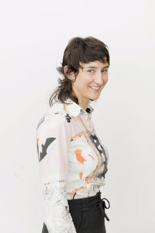

Rhoslyn Coles

Contact
TU Chemnitz, Fakultät für Mathematik
Reichenhainer Straße 39/41
Office: C46.717
Email: rhoslyn.coles"aloop"math.tu-chemnitz.de
About
I am a postdoctoral researcher at the Technische Universität Chemnitz working within the Reiter Group (Harmonic Analysis).
My interest is in using geometry and topology to explore the relationship between the shape and function of materials. My research entails modeling, analysis, experimentation and computer simulation, and uses results of several diverse fields: from integral geometry and geometric measure theory to soft condensed matter physics and stochastic optimization.Fields of interest:
Geometry, differential geometry, geometric knot theory, mathematical visualization